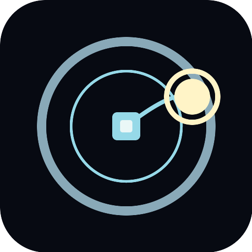
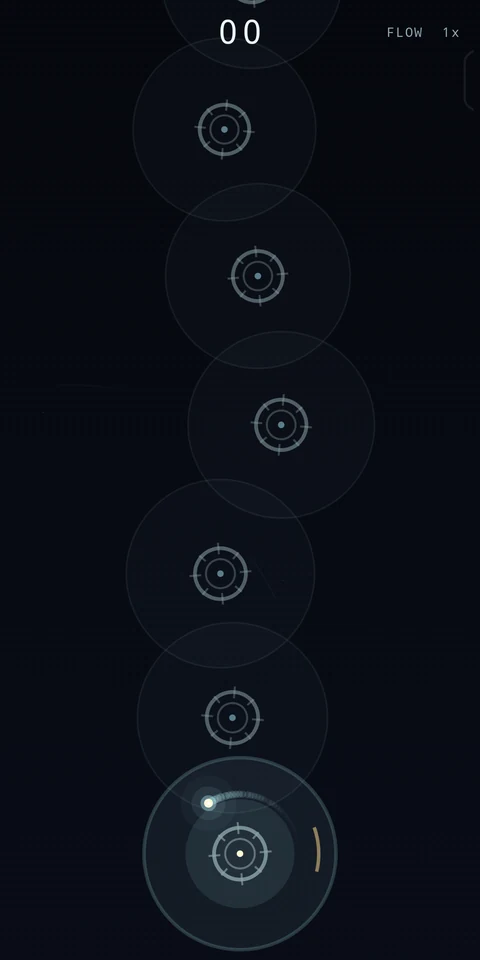
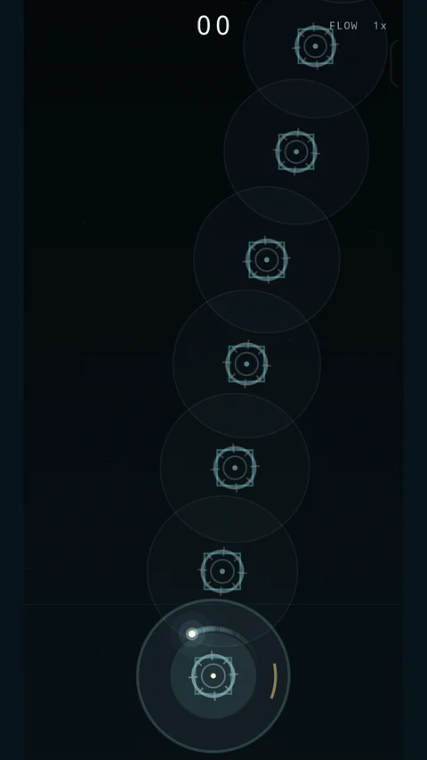
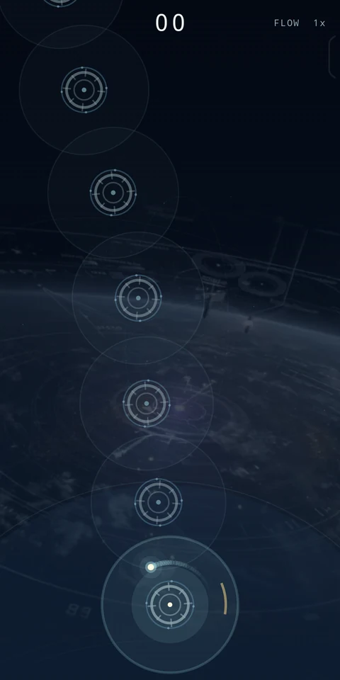
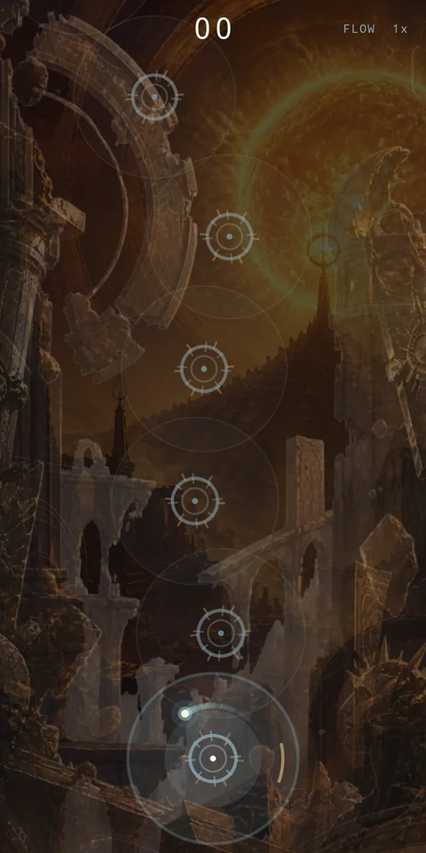
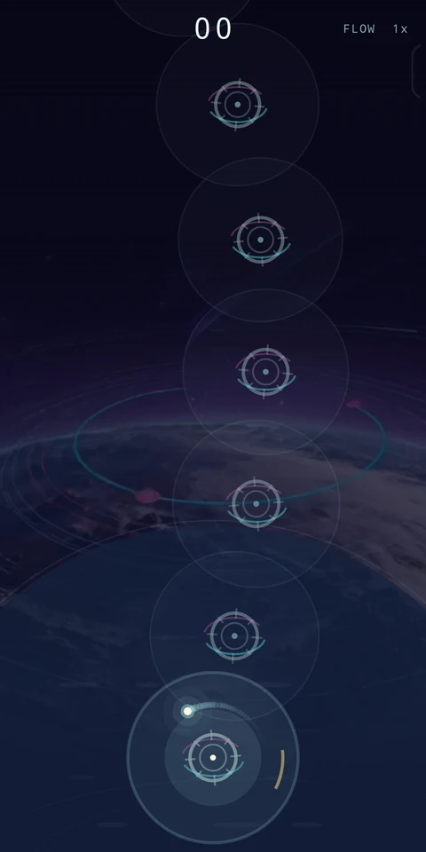
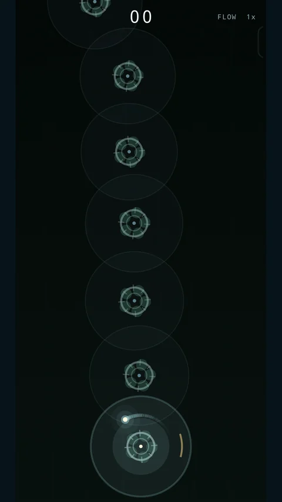
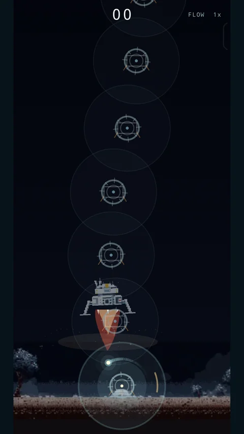

Um polegar. Dois toques.
Toque para se prender a uma âncora. Toque de novo para se soltar. Alcance a próxima âncora, acerte o momento PERFECT e aumente o Flow.
Jogos independentes. Cada instante conta.
Nosso primeiro jogo · Arcade para Android

Entre em órbita ao redor de uma âncora, escolha o momento e solte-se em direção à próxima. Jogue com um polegar, aumente o Flow e tente superar sua melhor pontuação.
A jogabilidade principal funciona offline. Interface do jogo: inglês.

ArcLatch
Explore sete mapas diferentes e desbloqueie mundos por pontuação. Todas as imagens abaixo mostram jogabilidade real.
Orbital Foundry · Neon Circuit · Orbital · Solar Ruins · Planetary · Deep Bloom · Moon Lander






Toque para se prender a uma âncora. Toque de novo para se soltar. Alcance a próxima âncora, acerte o momento PERFECT e aumente o Flow.
Colete power-ups durante as partidas e descubra seus efeitos enquanto melhora seus recordes gerais e de cada mapa.
Compare pontuações no ranking mundial de cada mapa pelo Google Play Games. Rankings online e conquistas exigem conexão com a internet e um perfil do Play Games.
Aprenda no tutorial do jogo e ajuste a música e a resposta tátil. Os mapas são desbloqueados gratuitamente por pontuação; uma compra opcional de apoio, feita uma única vez, também desbloqueia mapas. Não há anúncios obrigatórios. Um anúncio opcional com recompensa pode oferecer uma vida extra por partida elegível, conforme a disponibilidade.
Baixe ArcLatch no Google Play